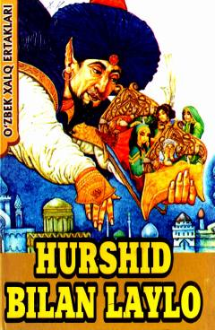

HBYosh kitobxonlar uchun qiziqarli o'zbek xalq ertagi.
Ushbu kitob yosh kitobxonlar uchun mo'ljallangan "Hurshid bilan Laylo" nomli o'zbek xalq ertagini o'z ichiga oladi. Nashr bolalarni ezgulik va yaxshilik sari yetaklovchi xalq og'zaki ijodi namunasi bilan tanishtiradi. Kitob Toshkent shahrida 2018-yilda nashr etilgan.